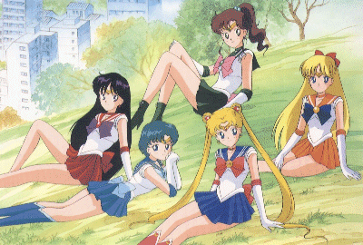

Sailor Moon

From the Anime Pocket Guide:
Cast:
Sailor Moon/Usagi Tsukino ........... Kotono Mitsuishi
Sailor Moon (ep. 44-50) ....................... Kae Araki
Sailor Mercury/Ami Mizuno .................. Aya Hisakawa
Sailor Mars/Rei Hino ................. Michie Tomizawa
Sailor Jupiter/Makoto Kino ................ Emi Shinohara
Sailor Venus /Minako Aino .................. Rica Fukami
Sailor Pluto/Setsuna Meiou .......... Chiyoko Kawashima
Sailor Uranus /Haruka Ten'ou ............... Megumi Ogata
Sailor Neptune/Michiru Kaiou ............. Masako Katsuki
Sailor Saturn/Hotaru Tomoe .............. Yuko Minaguchi
Tuxedo Kamen/Mamoru Chiba ................ Tohru Furuya
Chibi Usa ..................................... Kae Araki
Naru Osaka ............................... Shino Kakinuma
Gurio Umino ............................... Keiichi Nanba
Motoki Furuhata .......................... Hiroyuki Satou
Rei's grandfather ................... Tomomichi Nishimura
Yuuichirou Kumada ........................... Bin Shimada
Luna .......................................... Keiko Han
Artemis ................................. Yasuhiro Takato
Diana .................................. Kumiko Nishihara
Queen Beryl ................................... Keiko Han
Jadeite .................................. Masaya Onosaka
Nephrite ................................... Katsuji Mori
Zoisite ................................... Keiichi Nanba
Kunzite ................................. Kazuyuki Sogabe
Queen Metalia ............................. Noriko Uemura
Queen Serenity ................................. Mika Doi
Ail/Seijuurou Ginga (Sailor Moon R) ... Hikaru Midorikawa
Ann/Natsumi Ginga (Sailor Moon R) .......... Yumi Touma
Rubeus (Sailor Moon R) ........... Wataru Takagi
Cooan (Sailor Moon R) ......... Wakana Yamazaki
Beruche (Sailor Moon R) .............. Yuri Amano
Karaberas (Sailor Moon R) ......... Akiko Hiramatsu
Wiseman (Sailor Moon R) ........... Eiji Maruyama
Esmeroodo (Sailor Moon R) ............. Mami Koyama
Safiiru (Sailor Moon R) ..... Tsutomu Kashiwakura
Prince Demando (Sailor Moon R) ......... Kaneto Shiozawa
Kaolinite (Sailor Moon S) ........... Noriko Uemura
Professor Tomoe (Sailor Moon S) ............ Akira Kamiya
Pegasus (SM SuperS) ............... Taiki Matsuno
Fiore (SMR movie) ........... Hikaru Midorikawa
Himeko Nayotake (SMS movie) .......... Megumi Hayashibara
Description:
Tsukino Usagi (Rabbit of the Moon) is a rather underachieving
junior high school girl who gets low test grades, does poorly in
sports, and is often late to class. She's also a very caring
individual. When Usagi-chan sees some boys tormenting a black
cat, she rescues the cat. The cat reappears later to thank
Usagi and introduces herself as Luna. Usagi is frightened at
seeing a talking cat, so Luna gives her a pretty broach. With
the words "Moon Prism Power-Make Up!", the broach turns her into
the superheroine Sailor Moon. Her job is to fight against the
youma (demons) who appear to steal human energy. Unfortunately,
Sailor Moon is still spectacularly incompetant at fighting youma.
Fortunately, the mysterious Tuxedo Kamen appears to save her.
Later, the appearance of the other Sailor Senshi (warriors) will
help, since they are better at fighting than Sailor Moon is.
Luna is also looking for her missing Moon Princess. This is a
very funny series which enjoys massive popularity in Japan.
Tidbits:
- All of the Sailor Senshi are 14 year old schoolgirls dressed
in short, cute versions of their regular school uniforms.
- Like Tsukino Usagi, the names of the other Senshi are puns
relating to their planet or power (e.g. Mizuno Ami is
"Ami of the Water"; Sailor Mercury's power is water based).
- The Dark Kingdom villains seem to be named after gems of
various kinds (e.g. Jadeite, Kunzite, Beryl).
- The "Sailor Moon" series ends at episode #46 and is replaced
at #47 with "Sailor Moon R". It starts with two aliens, Ail
and Ann, who need human energy, similar to the first series.
At #60, Chibi Usa (little Usagi) appears with a demand for
the ginzuishou, Usagi's power jewel...
Other Resources
Anime Video Game Resource Center © 1998 by Luis A. Cruz